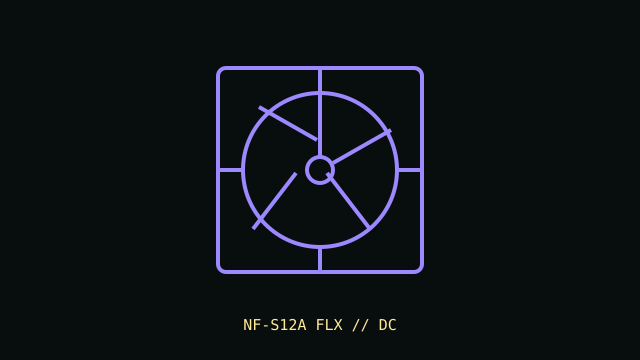

[ IDENTIFIED SKU // NF-S12A FLX ]
Noctua NF-S12A FLX
120 mm airflow-focused case fan with three-pin DC speed control and included low-noise adapters.

Recorded specifications
| Exact part | NF-S12A FLX |
|---|---|
| Frame / thickness | 120 × 120 × 25 mm |
| Speed / airflow / pressure / noise | 1200 RPM maximum; up to 107.5 m³/h airflow; 1.19 mm H₂O maximum static pressure; 17.8 dB(A) at maximum speed. Included LNA/ULNA adapters reduce speed. |
| Bearing | SSO2 self-stabilizing oil-pressure bearing |
| Electrical / control | 12 V DC; 0.12 A maximum input current; 3-pin fan connector with DC voltage control. It is not a 4-pin PWM model. |
| Case / radiator compatibility | Standard 120 mm mount and 25 mm thickness; designed primarily for case airflow. Confirm mount, cable reach and fan curve. The documented 1.19 mm H₂O maximum is lower than pressure-focused radiator fan designs. |
Installation notes
Use a DC-controllable motherboard or fan controller. Confirm the connected header is configured for voltage control and observe the maximum current rating.
Manufacturer sources
- Noctua product page — NF-S12A FLXManufacturer product identity, dimensions, speed, airflow, pressure, noise and connector.
- Noctua technical data sheet — NF-S12A FLXManufacturer technical specification sheet for the FLX variant.